UML Component Diagrams Reference

The major elements of UML component diagram - component, provided interface, required interface, port, connectors.
| Notation | Description |
|---|---|
| Component | |
|
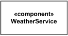
WeatherService Component |
Component is notated by a classifier symbol with «component» keyword.
This notation was introduced in UML 2.0.
|
|
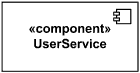
UserService Component |
Optionally, a component icon that is similar to the UML 1.4 icon
can be used in the upper right-hand corner of the component symbol.
|
|
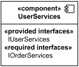
External view of User Services component - it provides IUserServices interface and requires IOrderServices interface. |
External view or black box component notation -
showing a listing of the properties of a component - the interfaces and/or individual
operations and attributes listed in the compartments of a component box.
|
|
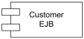
CustomerEJB Component in UML 1.x notation |
For backward compatibility reasons, the UML 1.4 notation
with protruding rectangles can still be used.
|
| Provided Interface | |
|
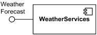
Weather Services component provides (implements) Weather Forecast interface. |
A provided interface is the one that is either
|
| Required Interface | |
|
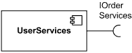
User Services component requires IOrderServices interface. |
A required interface is either
|
| Component Realization | |

Component UserService realized by UserServlet and UserDAO. |
A component realization is notated in the same way as the
realization dependency i.e., as a general dashed line
from implementing classifiers to realized component having
hollow triangle as an arrowhead.
|
|
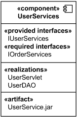
White box view of User Services component - it is realized by UserServlet and UserDAO and manifested by UserService.jar artifact. |
Internal classifiers that realize the behavior of a component may be
listed in the additional «realizations» compartment -
internal, or white box view of a Component.
Compartments may also be used to display a listing of any parts and connectors, or any implementing
artifacts.
|
|
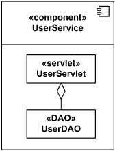
Component UserService realized by UserServlet and UserDAO. |
Internal classifiers that realize the behavior of a component
may be displayed nested within the component shape.
|
| Delegation Connector | |
|
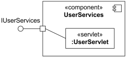
Delegation connector from the delegating port to the UserServlet part. |
A delegation connector is a connector that links the external contract of a component (as specified by its ports) to the realization of that behavior. It represents the forwarding of events (operation requests and events): a signal that arrives at a port that has a delegation connector to one or more parts or ports on parts will be passed on to those targets for handling. A delegation connector is notated as a connector from the delegating port to the handling port or part. |
|
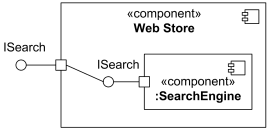
Delegation connector from the delegating port to the simple port of SearchEngine. |
If the delegation is handled by a simple port, then the delegation connector may optionally be shown connected to the single lollipop of the realizing component. |
|
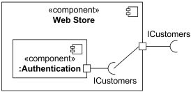
Delegation connector from the simple port of Authentication component to the delegating port. |
If the delegation is handled by a simple port, then the delegation connector may optionally be shown connected to the single socket of the component that requires the interface. |
| Assembly Connector | |
|
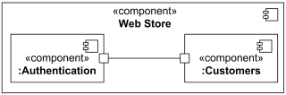
Assembly connector between ports of Authentication and Customers components. |
An assembly connector is a connector between two or more parts or ports on parts that defines that one or more parts provide the services that other parts use. Assembly connector is notated as a connector between two or more parts or ports on parts. |
|
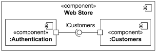
Assembly connector between simple ports of Authentication and Customers components. |
When an assembly connector connects simple ports (ports that provide or require a single interface), it may be notated by a "ball-and-socket" connection between a provided interface and a required interface. |
|
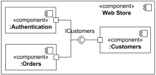
Assembly connector that assembles three parts. |
Where multiple components have simple ports that provide or require the same interface, a single symbol representing the interface can be shown, and lines from the components can be drawn to that symbol. This presentation option is applicable whether the interface is shown using "ball-and-socket" notation, or just using a required or provided interface symbol. |